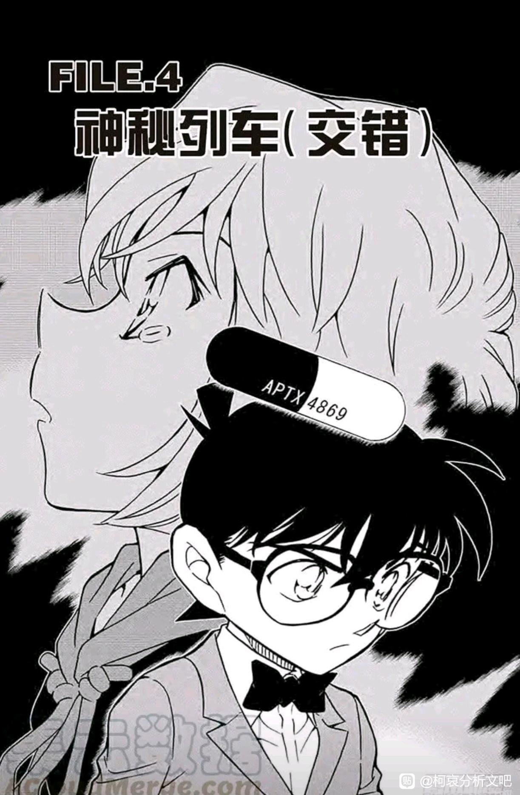
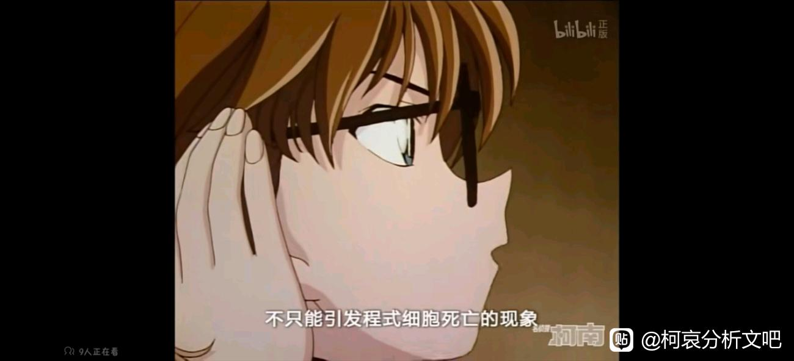
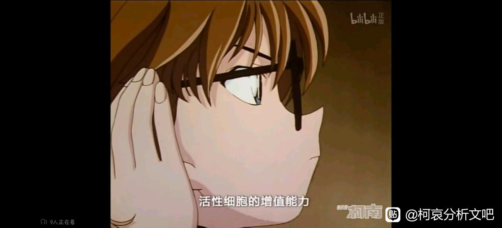
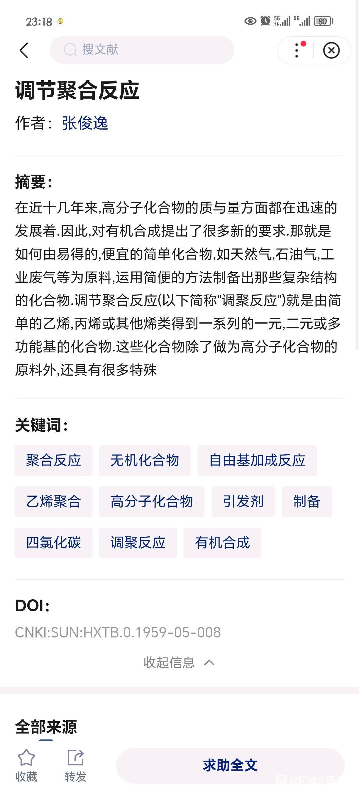
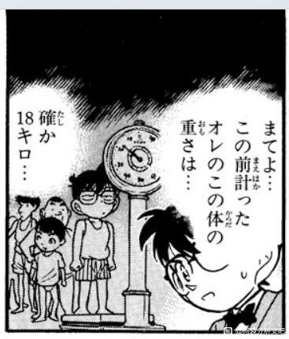
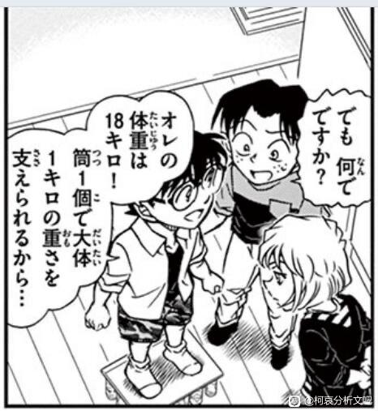
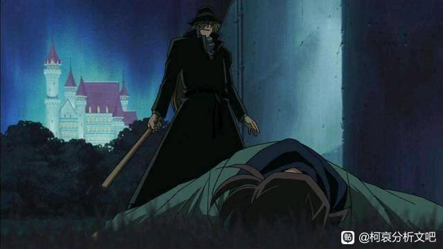
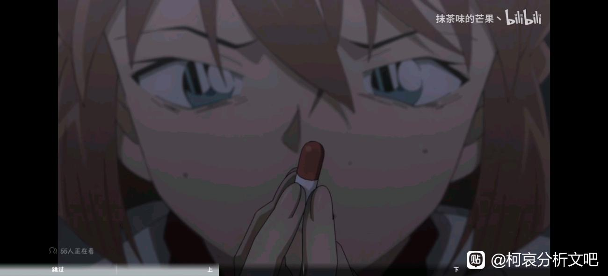
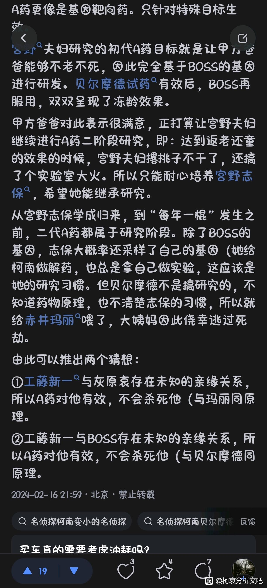

如图

众所周知，aptx4869，本身是细胞程序性死亡—4869的翻译。结合灰原前期动不动就想自我结束生命的状态，就像一个像启动自残程序的细胞
2024-02-27 00:39 | chengqu55:更正一下，启动自我毁灭程序的细胞
所以药物名前半部分对应灰原哀前期的自残倾向
再结合4869来看，日语音译是福尔摩斯的谐音（应该在再会篇提到过），并且该药的半成品状态本身就是被组织戏称为“成事不足的侦探”，对应初期还没有完全摆脱工藤新一影子的江户川柯南
其实还想有个暴论。变小前的工藤新一的自我介绍一直都是“高中生侦探工藤新一”，但是为什么整个对于柯南这部漫画来说，为什么不是“侦探柯南”或者“小学生侦探柯南”，却是“名侦探柯南”呢？并且剧中柯南的介绍目前也还是“江户川柯南，是个侦探”，没有加上“名”这个字
这可能说明柯南只有彻底摆脱“工藤新一”这个身份，以“江户川柯南”这个还“成事不足”的侦探出发，经历一系列磨难，最后才能成为一个“名侦探”
这样的话有个问题，彻底摆脱“工藤新一”这个身份需要付出什么代价呢
很有意思的解释，不过“自残”这个词，我觉得用“自毁”更合适，毕竟自残是一种伤害自己身体行为，哀并没有自残的行为倾向
从作者的角度考虑，给药物命名的时候，其实APTX就已经可以作为药物名了。把代表柯南的夏洛克放进去的意义是什么呢？因为连接两个人的命运的药物名，所以把两个人都放进去吧
从作者的角度考虑，给药物命名的时候，其实APTX就已经可以作为药物名了。把代表柯南的夏洛克放进去的意义是什么呢？因为连接两个人的命运的药物名，所以把两个人都放进去吧
2024-02-26 10:11 | chengqu55:是这样的，一开始没用自毁是怕被和谐其实在再会篇里，电脑的正确密码，“成事不足的名侦探”shelling ford这个柯南道尔正式给福尔摩斯取名以前暂定的侦探名字，与工藤新一与江户川柯南的关系如出一辙。
接下来进行下一个分析，关于a药作用本身。


上图可以知道，a药不仅能促进细胞程序性死亡，还能增加带“调聚反应”细胞的增殖能力（PS：作为医学生也是第一次听说有调聚功能的细胞，这个反应本身在化工化学合成领域用的比较多，73为什么不直接说提高有全能性的干细胞的增殖能力呢hhh）
调聚反应概念百度学术如下

2024-02-26 10:27 | chengqu55:调聚反应本身在化学领域是讲简单的化合物化合成更复杂的化合物，但…人体大部分细胞都是吸收复杂的营养物比如葡萄糖，吐出来的是二氧化碳这种低熵的化合物
但是体内细胞利用葡萄糖生成复杂的糖原，把脂肪酸合成脂肪链，氨基酸生成蛋白质还是有这个功能的（明早翻一下生化书再看看）
新的角度就跟二分之一的福尔摩斯一样，只有两个人才是一个完整的概念
就跟二分之一的福尔摩斯一样，只有两个人才是一个完整的概念2024-02-26 10:32 | chengqu55:是这样的，所以看到封面的图，特别是药丸身上可以把名字打出来，一下子想到了二人
所以为什么喝了老白干可以暂时变大呢？这里可以推测，是因为老白干刺激了这种所谓“带调聚能力”的细胞的增殖能力（感觉还是有点别扭，医学上把这类细胞称为干细胞），所以干细胞增殖后可以完整复原原来的成人体型
但这里有个问题，心肌是没有干细胞的（前几年就因为这件事还打假了一个名教授），所以如果真按照这个思路，两人即使身体变大了，但是心脏由于没有干细胞，也就没有这种“带调聚功能”的细胞，因此不会增大
这样可以推理出两个角度
1.为什么连续两次吃药间隔过短会导致第二次变大时间缩短。因为每次变大都要消耗干细胞，间隔太短的话干细胞还没来得及补充。
2.为什么工藤新一恢复成柯南前都会中途出现心脏不适的预兆（危命复活里前一天就已经出现了心脏不适后昏迷，但第二天醒来还没变小），说明这不是之前所猜测的适配性的问题，而是因为心脏没有一起变大，但身体已经变成了成人，所以运动过久，导致心脏供血不足，出现的急性冠状动脉缺血的表现，心肌梗塞的前兆
1.为什么连续两次吃药间隔过短会导致第二次变大时间缩短。因为每次变大都要消耗干细胞，间隔太短的话干细胞还没来得及补充。
2.为什么工藤新一恢复成柯南前都会中途出现心脏不适的预兆（危命复活里前一天就已经出现了心脏不适后昏迷，但第二天醒来还没变小），说明这不是之前所猜测的适配性的问题，而是因为心脏没有一起变大，但身体已经变成了成人，所以运动过久，导致心脏供血不足，出现的急性冠状动脉缺血的表现，心肌梗塞的前兆
2024-03-09 07:48 | 九九玉生烟:这个解读感觉非常专业准确啊
“调聚”是翻译错误
私達の体を幼児化したAPTX4869のアポとはアポトーシス…つまりプログラム細胞死の事…
【误】让我们身体变小的APTX4869的APTX就是apotoxin，也就是程式细胞之死的意思。
【正】让我们身体变小的APTX4869的AP就是apoptosis，也就是程序性细胞死亡的意思……
だた、この薬はアポトーシスを誘導するだけじゃなく、テロメアーゼ活性も持っていて細胞の増殖能力を高める…
【误】而且这种药不仅能诱导apotoxin，还具有调聚活性来增加细胞的增殖能力。
【正】而且这种药不仅能诱导apoptosis，还具有端粒酶活性来增加细胞的增殖能力…
另注：テロメアーゼ是原文的拼写错误，正确拼法是テロメラーゼ，把ラ误写成ア可能是因为端粒是テロメア。1999年第一刷和2001年第8刷都是写的ア，不知道后来有没有改
私達の体を幼児化したAPTX4869のアポとはアポトーシス…つまりプログラム細胞死の事…
【误】让我们身体变小的APTX4869的APTX就是apotoxin，也就是程式细胞之死的意思。
【正】让我们身体变小的APTX4869的AP就是apoptosis，也就是程序性细胞死亡的意思……
だた、この薬はアポトーシスを誘導するだけじゃなく、テロメアーゼ活性も持っていて細胞の増殖能力を高める…
【误】而且这种药不仅能诱导apotoxin，还具有调聚活性来增加细胞的增殖能力。
【正】而且这种药不仅能诱导apoptosis，还具有端粒酶活性来增加细胞的增殖能力…
另注：テロメアーゼ是原文的拼写错误，正确拼法是テロメラーゼ，把ラ误写成ア可能是因为端粒是テロメア。1999年第一刷和2001年第8刷都是写的ア，不知道后来有没有改
2024-02-26 10:54 | chengqu55:原来如此，我总是感觉翻译怪怪的
现在有个头疼的问题是，老白干与激发端粒酶的活性有什么相关性。喝其他酒也能变大，只是时间长短不同，还是只有喝老白干这个白酒才能变大呢？有比较熟悉全篇的uu可以解答下吗
灰原曾在危命篇说过，基于老白干的成分做出了解药，而不是说基于酒类或者乙醇作为原料，我倾向于老白干里乙醇和其余的酸类酯类的比例接近于能最大激发端粒酶活性，灰原的解药只是调整了老白干里不同化合物的比例
顺便插一句，最近某一篇里柯南抱怨半年没有长高，推测出🈶冻龄的效果。为什么冻龄了呢？在柯学世界里可以看作身体里每个细胞不会死亡，但也不会分裂，或者这样说，柯南身上每个细胞的原癌基因和抑癌基因都被死死摁住了
a药目前作为半成品毒药，最大“功能”是杀死人有骨头溶解的感觉，同时又不会在体内发现毒药痕迹。这个很好理解，因为现代刑侦手段分析毒药要么是在血液等体液里寻找，要么捣碎靶器官（如肝肾脑）部分细胞，分析细胞内液有没有外来毒药。a药就神奇在，相当于只是大量增加了细胞里激活抑癌基因的上游物质（具体是哪些分子得查查文献），引发了下游的抑癌基因被转录表达。所以要检测出a药的踪迹，办法还是有，就是做蛋白质含量分析wb实验，看抑癌基因上游物质是不是大量表达。至于a药跑哪里去了，我猜测在非干细胞里用来合成这些上游物质促进细胞程序性死亡，然后在干细胞里表现出端粒酶的活性而非死亡性
但为什么只有柯哀，还有世良玛丽这三人目前变成了小孩还或者，其余人全死完了呢？我的推测是，其余人的非干细胞死的太多，即使剩下了已有的干细胞，都无法维持生命运转
为什么灰原哀能活？我猜测宫野夫妇制作这个药的时候，利用了自己身上干细胞的靶点，可以精确的控制着其余非干细胞的死亡后，还能最低程度的维持生命。也许宫野夫妇做到这一步，是想接下来继续改良靶点，让大部分人吃了这个药，死了很多非干细胞齁，还能维持生命。但组织纯粹是拿来做毒药的，到这一步就心满意足，拿这个药开始杀人。宫野夫妇此时才发现酿成大错，或许想自己焚烧研究所，或者是组织发现两人不合作所以烧了研究所（但感觉后者概率很小，因为这样只需要杀死宫野夫妇就行，何必烧了研究所和那么多器材呢），所以我倾向于宫野夫妇带着愧疚把研究所和自己的生命都付之一炬
aptx4869本身就是一半一半，一半的生化术语，一半的福尔摩斯，结合在一起成为串联整部作品的线。说起来，这款药的名字确确实实是Sherry第一次告知柯南和观众，那一刻，命运之轮才开始转动。
2024-02-26 11:30 | chengqu55:是的，一个从“程序性死亡”到“程序性不死亡”，一个从“成事不足的侦探”逐渐成长为“名侦探”
所以按照这个逻辑，对于a药来说，只有与宫野家🈶血缘关系的才能勉强活下来，比如赤井一家，所以世良玛丽能活下来
2024-02-26 12:16 | 黑礼帽的誓言:那贝姐呢
那问题来了，柯南这个73明确说过与宫野家没有血缘关系的，是怎么吃了a药还活下来了的呢
不光是身高，柯南的体重从10卷到86卷也没变


2024-02-26 11:32 | chengqu55:是的，相当于每个细胞都被锁死了，其新陈代谢的功能只是勉强维持生存，更不要说分裂和生长了
来看一个细节，工藤被灌药之前头上是挨了琴酒一闷棍的

灰原喝老白干时，柯南说过感冒的时候喝效果最好，但在SP十年后的陌生人里，柯南重感冒后吃了基于老白干的解药，反而一直昏迷着（虽然不知道是不是烧过头直接睡着了）
我的猜测是，头上挨了一闷棍，要么是类似于感冒发烧这样，让大脑昏迷的状态，要么是打到了大脑某个奇怪的部位（脑震荡？），让体内的非干细胞死的没有那么多，（因为大脑处于麻痹状态下），但以此为代价就是所有细胞原癌基因和抑癌基因都被锁死了（毕竟不是宫野家的血缘或者亲戚），处于一个完美的冻龄状态
说完理性的分析，再来说点感性的
正是因为这个对其他没有宫野家血缘的人来说是毒药的a药是跟自己血脉相连的父母研发的，而只有对有宫野家血缘的人，正常状态下吃了后才会真正发挥出“返老还童”的能力

所以说，宫野父母给予宫野志保最后的爱，最后的保护，就凝结在了这颗a药里，让本来想赴死的她，有了最后一次生的可能
2024-03-03 16:11 | 贴吧用户_75RaaSS:好感人
灰原说过，任何人不能逆流时间，否则就会受到惩罚。大部分人认为，这句话的理解是，最后两人都会吃了解药一下子都发现恢复到原来的工藤新一和宫野志保。但基于医学生的角度，我对这句话的理解是，已经死去的细胞永远无法再被逆流（恢复），想要让早就死掉的细胞重新复活，会受到生理意义上的惩罚。其实如果真想要做出永久性解药，当然有答案，就是抑制a药程序性死亡的那部分作用，只保留端粒酶活性让细胞无限增殖的能力
当然，我们都知道细胞无限增殖的惩罚是什么—癌症
因此，我推测结局大概率就是哀做出解除柯南冻龄状态的药，两人一起长大。
喝了老白干的二人，能暂时恢复到成人状态，这是在干细胞增值能力被激发状态下的短暂表现，以抑制细胞程序性死亡为代价。但如果抑制细胞程序性死亡，最后的结局就是癌症
可能贝姐应该和乌丸莲耶一样 都是宫野夫妇单独特制给他们俩的，是一种只针对他们自己的靶点单独的a药。贝姐明确🈶冻龄的特点（20年没变过容颜），但结合她对宫野夫妇的怨恨，猜测可能1.她在boss的逼迫下被迫当小白鼠吃药，2.也有可能她只是想返老还童到某个时间点后又继续正常发育，没想到吃了药被冻龄，正好是boss想拥有的能力，所以boss也吃了对他特制的a药
好帖子，第一次看到专业医学角度的分析
2024-02-27 02:23 | chengqu55:希望更多🈶这方面知识的uu一起来分析
太厉害！这个分析绝了 希望在柯学世界适用
希望在柯学世界适用
希望在柯学世界适用2024-02-27 02:23 | chengqu55:主要看73自己的医学知识框架是怎么搭建的，柯学世界里的人体细胞也只能跟着他走2024-02-27 02:34 | AliceMZT:回复 chengqu55 :哈哈哈哈哈哈那也是 不过楼主的分析真的很有意思 我是比较希望柯哀最后一起慢慢长大的 感觉这种可能多一份希望2024-02-27 06:20 | chengqu55:回复 AliceMZT :同意


虽然这些的医学专用术语我不是很能看得懂，但我感觉还是好牛逼的样子
2024-02-27 02:22 | chengqu55:感谢支持

让我想起黑白君了
这样看来，为什么贝姐把柯南当儿子呢？很简单，两人都是少有的吃了a药后冻龄的人，所以一定程度上同病相怜
在知乎发现一个类似的贴子

我作为药学专业，实在是又想分析A药，又实在是因为太柯学，所以没法解读。
物理学不存在了是我对a药和白干以及a药暂时解药的浓缩式解读。
酱香科技是对白干最高的赞赏。
物理学不存在了是我对a药和白干以及a药暂时解药的浓缩式解读。
酱香科技是对白干最高的赞赏。
2024-03-03 08:49 | chengqu55:确实是这样
难他天啊啊啊
好高深的解读 学习
你直接看aptx4869 密码那里。很直白了。 aptx4869 = sherrinford ~ sherri.
2024-03-11 09:20 | chengqu55:感觉这个比sherlock还要更直白！
不明觉厉！乐